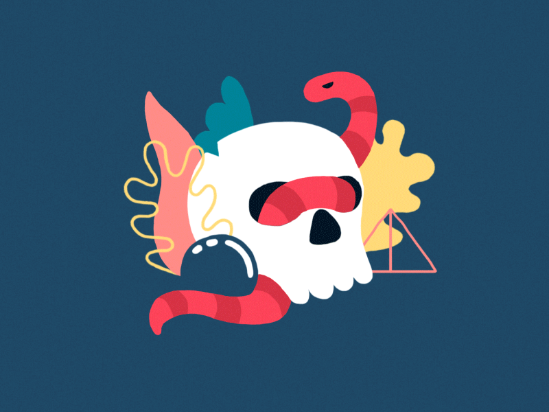
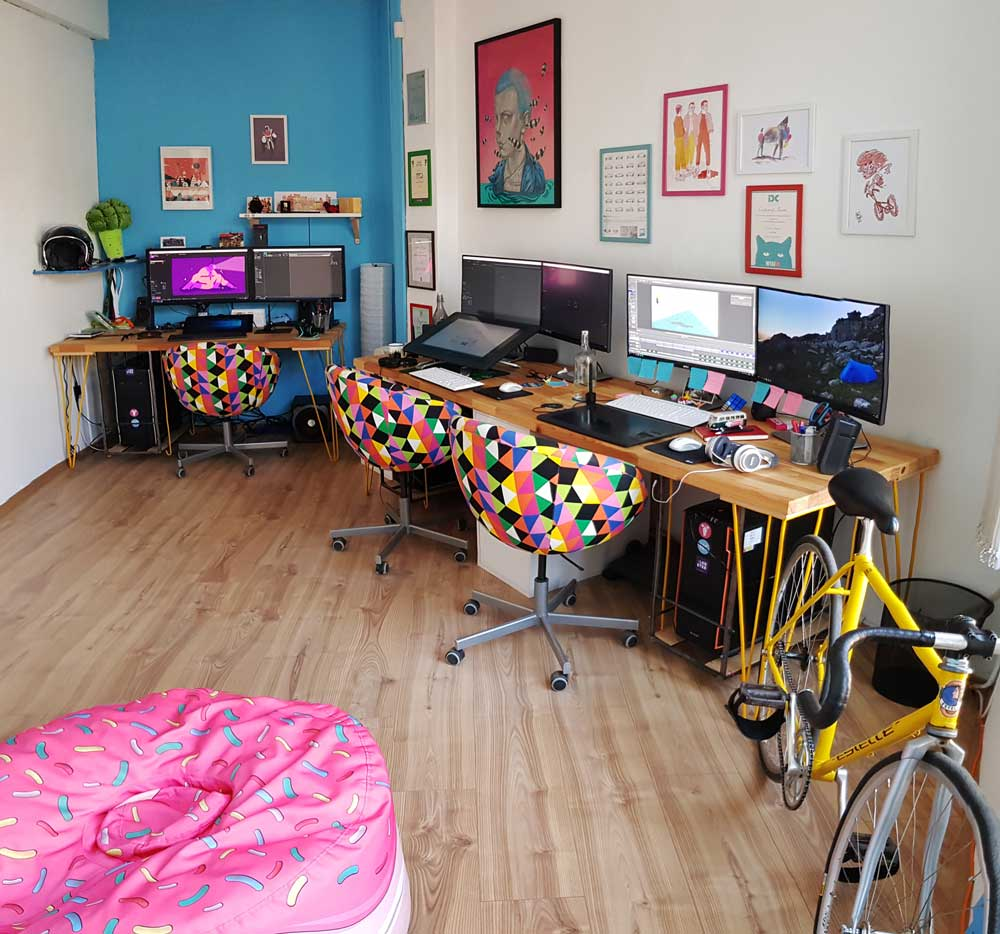

Stefan Vladimirov
Chief Creative at Swipes. Loves order and beauty. Always striving to achieve the balance between function
and aesthetics.
Animation studio
Nikolay Ivanov Petko Modev Teodor Hristov
Short intro
N:My name is Nikolay, and I come from the nice sea town of Burgas. Curently living and working in Sofia, Bulgaria.
P:My name is Petko Modev and I’m an animator in love with all things animation related.
T:Hi, I am a young motivated animator currently working in Sofia for Lobster studio. My biggest passion is motion and making drawings come alive. Apart from that I enjoy a good ride with my bike both in the mountain and in the city and chilling with nice music from a record player.
What do you do for a living?
N:I’ve been working as an animator for the past 6 years. Now co-running Lobster Studio together with Fausto Montanari. Petko and Teo joined the team almost a year ago and we have already created some awesome stuff together. I can’t wait to see what’s next. Working in animation is probably the best thing that have happened to me. Everything that I work on is different and I really enjoy the entire process.
P:I’m an animator at Lobster Studio.
T:I am working at Lobster Studio.
When did you find your passion for animation?
N: I remember when I was graduating university, I really couldn’t imagine myself as an animator. I didn’t want to be in front of a computer all the time. I was in an acting class and loved being among people. Also I didn’t have any great experience with animation and I couldn’t imagine that one day I can do that for living. It’s a hard, hard work. But somehow I got really motivated just after I graduated, and started to experiment a lot and began to constantly learn new things. I still do, and I enjoy it the same way.
P:I’ve always enjoyed animation. Ever since I was a little kid I wanted to be an animator and I just stuck with it and never really considered doing anything else.
T:My initial dream was to become an architect, but suddenly I realised that there is too much restrictions in the architecture field and that I wanted to make things that are beyond all possibilities. So when I did my first moving frames that was it!
How long have you been doing your craft?
N: It’s been 6 years professionally + 4 years in University. In fact I had my first contact with animation when I was around 14. I did my very first animation movie on MS Paint, drawed it with the mouse, and composited it in Movie Maker. It was really cool to do it, even though I am sure it was terrible result imagining it now. Unfortunately my hard drive died soon after and I lost my first film.. : ( Animation is incredibly versatile, and if you really enjoy it you don’t feel the time passing. I can say that animation teached me to being really patient.
P:Professionally for three years.
T:I did my first steps in animation 8 years ago but I had a lot to learn in university. I am doing it professionally for 3 years now.

Describe the beginning of your day
N: I wake up between 8:00 - 08:30 in the morning. Take a shower, take the Vespa, take a sandwich, take a coffee, reach the studio.
P:My day usually starts around 7:30 with my dog nibbling on my foot which means it’s time to go for a walk. After I walk the dog I take a quick shower and by that time I’m probably already late for work, so I rush to the office pretty winded and the work day begins.
T:I get up at 7:30 - 8:00, have a cup of black tea, have a breakfast and ride my Fixie bike to work. I usually watch a a few short animations and projects in behance or vimeo to get inspiration for the day and start working on personal and client projects.
What’s your workspace?
N: P: T:We are working each on 2x27 inch displays, and cintiq pen display tablets for frame by frame animation. We have wide wooden desks, that are really helpful to keep all the stuff we need.
What’s your source of inspiration?
N: Inspiration comes with the work. The more things I work the more ideas I have for new things. I browse dribbble, instagram, vimeo, behance on a regular basis. I love also working on Fausto’s concepts, as I find them fun to give life to. Another source for me are animals. I do animate animals very often. At the time I take break from work I gather some ideas from experiences and places.
P:Right now Behance, Vimeo and Tumblr are a pretty good source for inspiration.
T:I like to observe people, animals, nature. Each person has his own style of walk cycle and each leaf is falling in a different way so everything that moves is inspiration for me. Also I get inspired by other people’s art of course
What works are you most proud of?
N: Lately we’ve been developing some really fun projects at Lobster. We have created our first short animated film, that is currently on festivals - Weird, directed by Fausto Monatanari. So far we have recieved multiple awards and recognitions for the film on many festivals around the globe. You can follow all about it at the Facebook page of Weird. Animation is all about improving all the time, so I believe there will be better and better works soon.
P:I’m really happy with the film Weird that we did at Lobster Studio. I’m also glad I could graduate my bachelor degree with a semi-descent film.
T:I am most proud of my work in the “Weird” short animation which we did in Lobster studio. And also with a few personal gifs with strange characters that I’ve made. Those projects were a big challenge and pushed my skills.

The short film "Weird" is a monologue about the diversity. It is a scream of a girl, used to be judged as weird and different. View more here.
What are the tools you use in your day to day life?
N:As I am mostly 2D focused, so I use basically After Effects, Illustrator, Photoshop, and sometimes other softwares that are only for frame by frame animation.
P: Mainly After Effects, Illustrator and Photoshop.
T:A bicycle, a graphic tablet and of course the usual software (After effects, Animate, Illustrator and Photoshop). pushed my skills.
Do you follow any set of principles for your work?
N: Quality over quantity. Have fun. Be patient. Be responsible.
P:After Effects, Illustrator and Photoshop.
T:Yes, the 12 principles of animation. Also patience and accuracy.

What’s your favourite movie?
N: I can’t say I have a favourite. I usually prefer comedies and animated movies.
P:Dr.Quinn Medicine Woman The Movie, also every B rated horror movie ever made is my favourite movie.
T: My favorite feature animation: O menino e o Mundo (The Boy and the World) by Alê Abreu
What's your favourite book?
N: The Animator’s survival kit by Richard WIlliams.
P:A Hundred years of Solutide by Gabriel Marquez.
T: Jonathan Livingston Seagull by Richard Bach.
What advice would you give to people that start out with animation?
N: Must be highly motivated to do it. Animation is not a job. You must love it in order to be able to do it good. Be prepared for long hours of work, and sure fun. There is a lot of work in the animation area at the moment, so I’d suggest everyone that is interested to give a try and see for himself it that’s what makes him happy. Never stop to improve.
P:Don’t do it. The chances that you’ll make a decent living out of this are very slim. Just give up while there’s still time and find a real job.
T: When you are a beginner you have to draw a lot, every day. You have to observe and exaggerate reality in your work. It is crucial to learn the basics of frame by frame animation in order to overcome all limitations and create something out of the box. You have to work almost like a slave to be able to experience the joy of seeing a drawing come to life. I think that’s what makes animation so awesome!

Have you ever thought of empowering your creative community in any way, shape or form?
N: Yes, I have some ideas that are currently taking shape in my head. I will reveal more soon when it’s time. : )
P:Yes, some ideas that we at Lobster Studio are considering to help out motivated young people who have an interest in the creative field.
T: I think creative festivals are the key for building strong communities of fellow artists. Festivals are the right place to get inspired, meet other creatives and share your own experience with the rest of the world. I try to attend as much events of this kind as possible in order to be part of the changing world of animation and arts.
Meet Studio Lobster on the Social Media
Dribbble Instagram Facebook VimeoIt was a pleasure reading your interview, guys. Keep doing what you're doing, we're proud with you!